東京・新宿與聖地巡禮
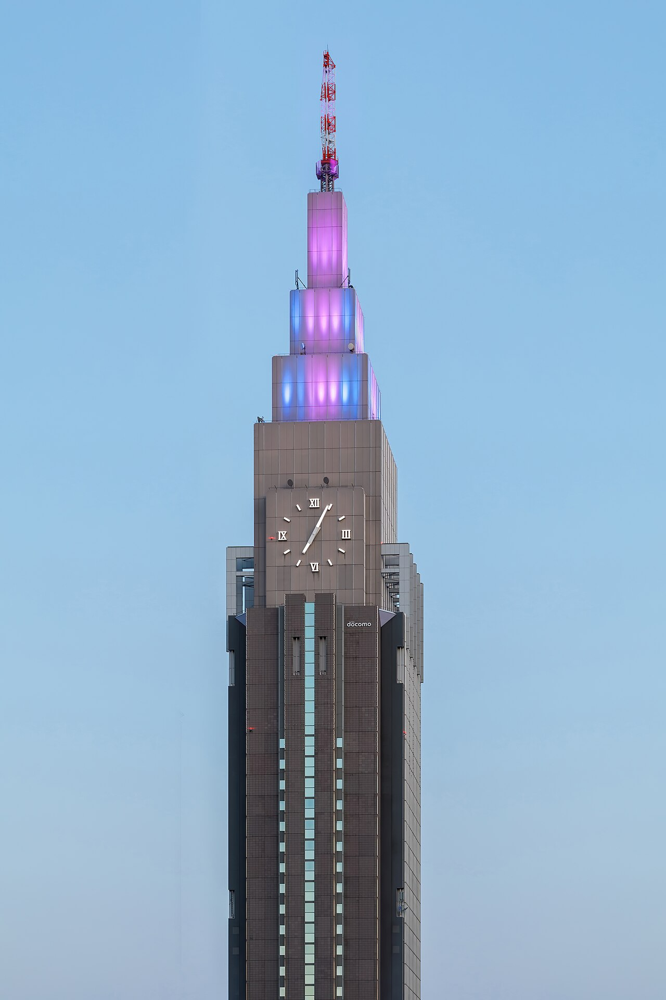
🏙️ 新宿站周邊
👀 必看
- 新宿站南口和甲州街道陸橋：瀧在東京生活的街景就在這一帶，傍晚高樓亮燈最有感覺。
- NTT docomo 代代木大樓：像帝國大廈的尖塔大樓，劇中東京天際線常出現。
⚠️ 注意
- 新宿站出口超過 200 個，先記好要從哪個出口出去。
- 東口歌舞伎町晚上有拉客的人，不要理會。

⛩️ 須賀神社男坂階梯（四谷）
👀 必看
- 紅色欄杆的石階：電影最後兩人擦身而過、回頭相認的經典場景。
- 站在階梯最下方往上拍，就是電影海報的構圖。
- 本殿有江戶時代的「三十六歌仙繪」，是新宿區文化財。
⚠️ 注意
- 這裡是住宅區，降低音量、不要擋住階梯，拍照時間不要太長。
- 早上 9 點前人最少。階梯下方是車道，注意來車。

🌉 JR 信濃町站天橋
👀 必看
- 車站前的天橋：瀧上學途中經過的場景，往新宿方向可以看到高樓群。
- 黃色車身的總武線電車從下面通過時，最有電影氛圍。
⚠️ 注意
- 天橋是行人通道，拍照時靠邊站。不要用腳架、不要爬上欄杆。
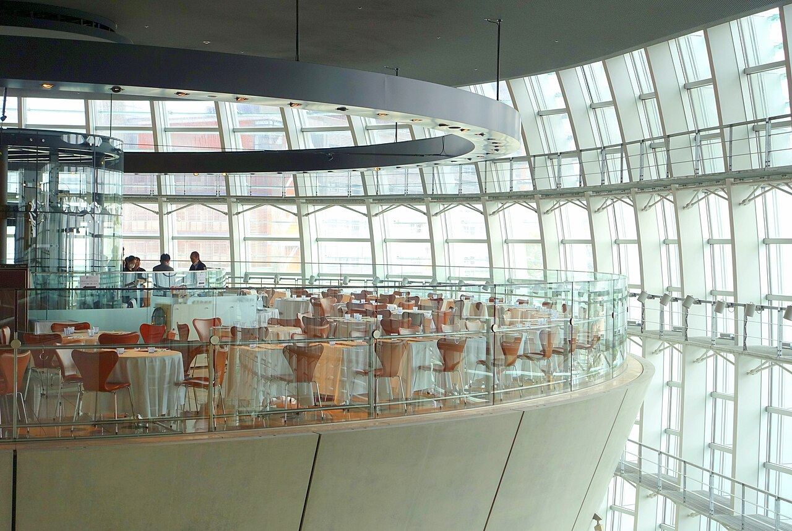
🏛️ 國立新美術館（六本木）
👀 必看
- 波浪型玻璃帷幕外牆，由黑川紀章設計。
- 倒圓錐上的咖啡廳「Salon de Thé ROND」：劇中約會的咖啡廳。
- 大廳的光影，自然光從玻璃帷幕照進來很好拍。
⚠️ 注意
- 每週二休館（已排在週一）。
- 咖啡廳不能預約、常排隊，建議一開館就去。
- 美術館免費進館，只有特展要另外買票。

🏙️ 六本木之丘 Tokyo City View
👀 必看
- 52 樓 360 度室內展望台，天氣好可以看到東京鐵塔、晴空塔，甚至富士山。
- Sky Deck 頂樓露天展望台（另外付費，天氣不好會關閉）。
⚠️ 注意
- 玻璃會反光，把相機貼近玻璃拍。
- Sky Deck 有安全檢查，包包和腳架要寄放在置物櫃。
購物日・原宿、表參道、澀谷
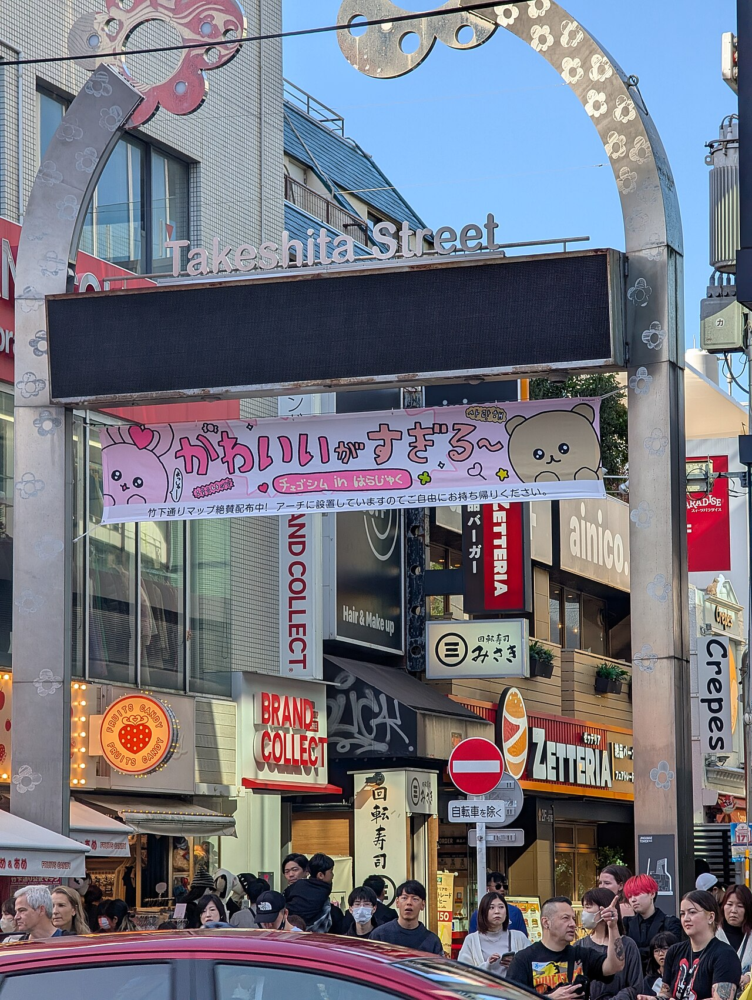
🛍️ 原宿竹下通
👀 必看
- 可麗餅：竹下通的招牌，有好幾家老字號名店。
- 可愛小物和流行服飾，日本少女流行文化的發源地。
⚠️ 注意
- 人非常多，約好走散時的集合點，例如竹下通入口。
- 單店消費滿 ¥5,000（未稅）可以退稅，記得出示護照。
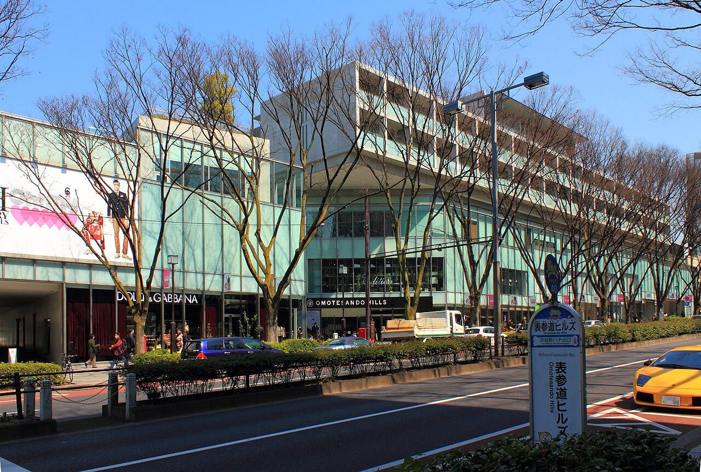
🛍️ 表參道
👀 必看
- 櫸木林蔭大道，被稱為「東京的香榭大道」。
- 表參道之丘：安藤忠雄設計，內部是螺旋坡道。
- 很多建築師設計的品牌旗艦店，建築本身就值得看。
⚠️ 注意
- 比較精品取向，孩子沒興趣可以讓他們回竹下通。

🛍️ 澀谷
👀 必看
- 澀谷十字路口：世界上最繁忙的十字路口之一。
- 忠犬八公像、SHIBUYA109（少女時尚大本營）。
- 澀谷 PARCO 6 樓：任天堂東京、寶可夢中心、卡普空、少年 Jump 商店。
⚠️ 注意
- 在十字路口拍照注意紅綠燈。任天堂東京常要排隊，熱門商品可能限購或售完。

🌆 SHIBUYA SKY
👀 必看
- 頂樓露天展望台，澀谷十字路口就在正下方。
- 「Sky Edge」玻璃角落，看起來像懸在空中。
- 日落前後同時看到夕陽和城市亮燈，最美也最熱門。
⚠️ 注意
- 一定要提前上網訂票，夕陽時段很早就賣完。
- 頂樓不能帶包包、帽子、自拍棒、腳架。天氣不好會關閉。
飛驒古川・聖地巡禮

🌉 JR 飛驒古川站跨站天橋
👀 必看
- 天橋上往北看的景色：瀧來找三葉時的經典畫面，背景是群山和小鎮。
⚠️ 注意
- 天橋是通往月台的通道，不要擋住乘客；拍電車時不要越過黃線。
- 車站前觀光服務處可以拿聖地巡禮地圖。

📚 飛驒市圖書館
👀 必看
- 館內的木頭裝潢和書架：瀧查到糸守町資料的地方，劇情的轉折點。
⚠️ 注意
- 要拍照請先到櫃台申請。這裡是真正的圖書館，保持安靜，不要拍到其他讀者。
- 休館日請先上官網確認。

⛩️ 氣多若宮神社
👀 必看
- 石階和鳥居：宮水神社的參考原型之一。
- 每年 4 月「飛驒古川祭」的舞台，「起太鼓」是有名的奇祭。
⚠️ 注意
- 參拜禮儀：先在手水舍洗手，二拜二拍手一拜。石階有點陡，慢慢走。
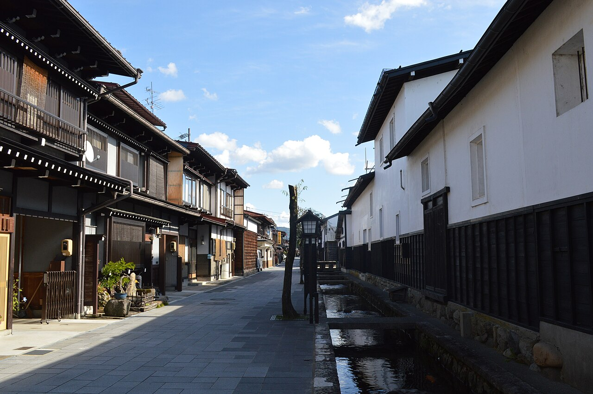
🐟 瀨戶川與白壁土藏街
👀 必看
- 小水道裡上千條鯉魚，配上白牆黑瓦的土倉，很有古鎮味道。
- 比高山安靜、人少，可以慢慢散步。
⚠️ 注意
- 冬天鯉魚會被移到池塘，8 月正好看得到。不要隨便餵鯉魚。
高山
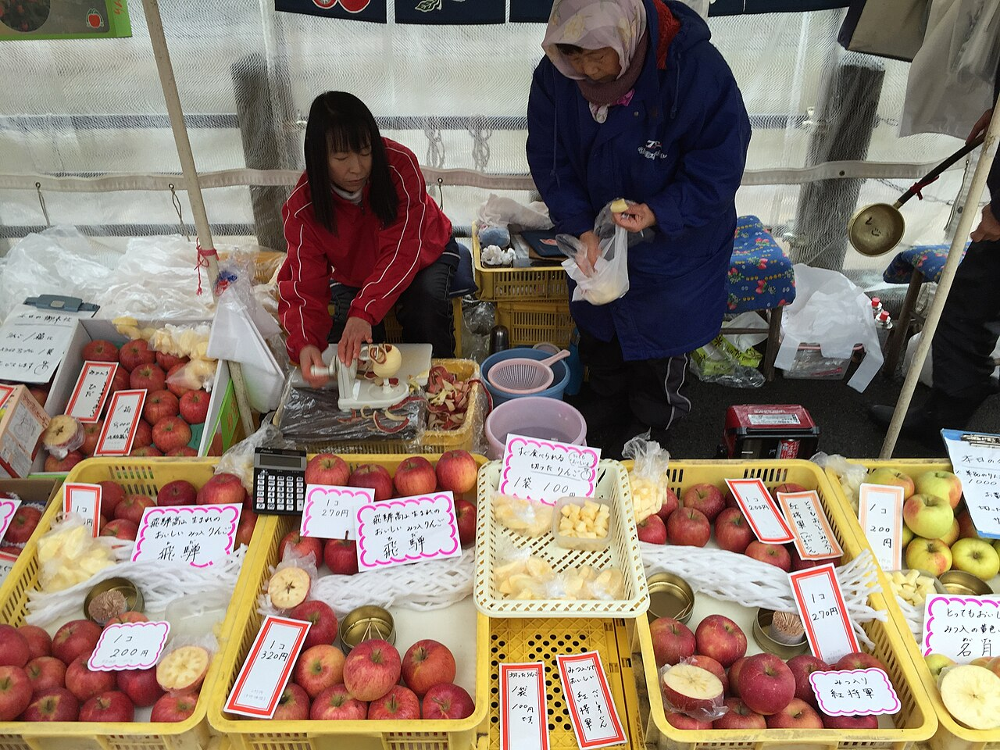
🍡 宮川朝市
👀 必看
- 日本三大朝市之一，沿著宮川有幾十個攤位。
- 現烤御手洗糰子、飛驒蘋果、醃菜、手工味噌。
- 猴寶寶（さるぼぼ）：代表全家平安、良緣的護身符。
⚠️ 注意
- 大約早上 7 點到中午，越早去選擇越多。很多攤位只收現金。
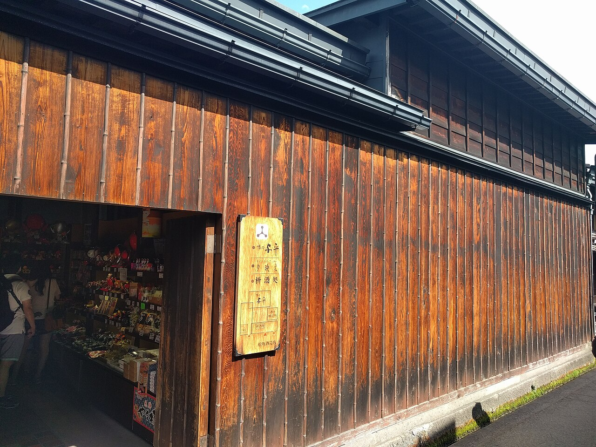
🏮 高山三町老街
👀 必看
- 江戶時代的老街景，被稱為「飛驒小京都」。
- 放在仙貝上的飛驒牛握壽司。
- 掛著杉玉的酒藏，爸爸可以試飲清酒。
⚠️ 注意
- 很多店不能邊走邊吃，請在店門口吃完。試飲清酒限 20 歲以上，孩子不能喝。
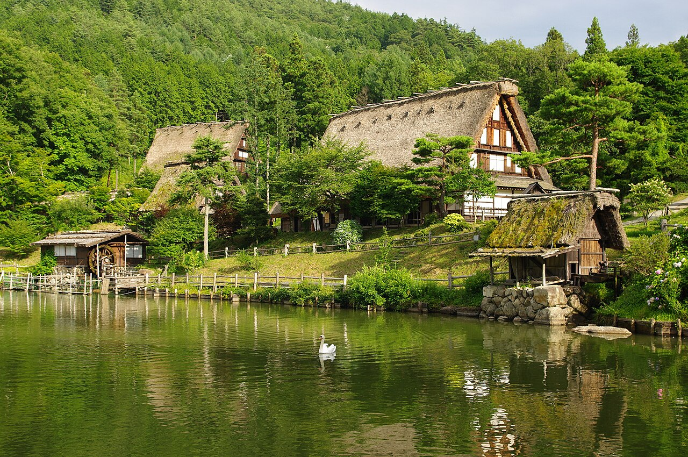
🏡 飛驒之里
👀 必看
- 合掌造民家：和白川鄉一樣的茅草屋頂房子，30 多棟古民家。
- 合掌屋倒映在池塘裡，是最經典的拍攝角度。
⚠️ 注意
- 園區有坡道，請穿好走的鞋。閉園時間請先確認。
上高地
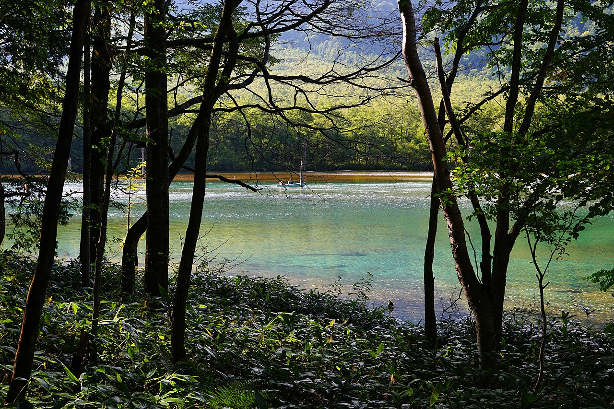
🏞️ 大正池
👀 必看
- 1915 年燒岳火山爆發堵住河流形成的池塘，池中枯木很夢幻。
- 無風時池面像鏡子倒映燒岳；早上起霧時最美。
⚠️ 注意
- 不能偏離步道；池邊石頭很滑，不要太靠近水邊。
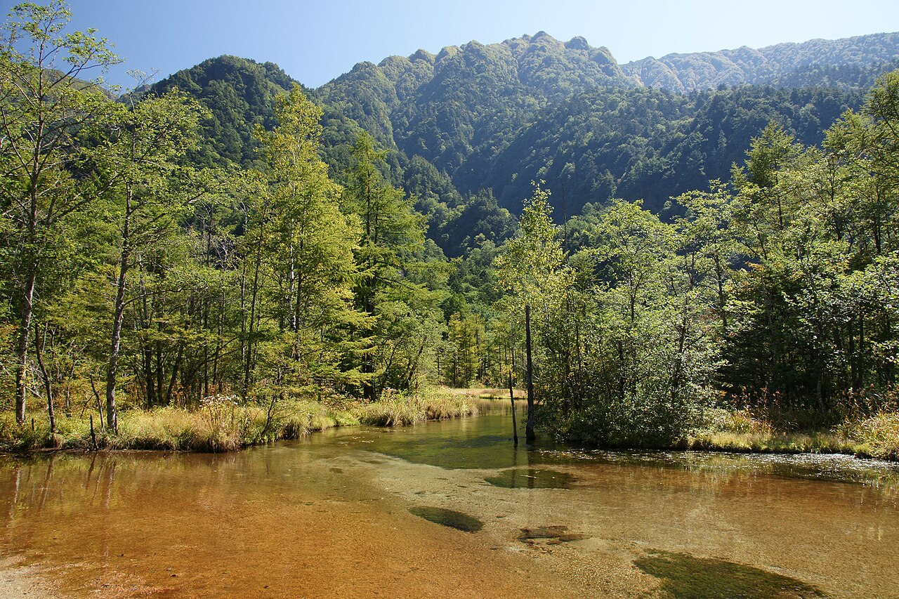
🏞️ 田代池
👀 必看
- 清澈見底的池水和濕地，流進來的是穗高山的伏流水。
- 晨間陽光照進樹林，很有童話感。
⚠️ 注意
- 木棧道雨後很滑；不要踩進受保護的濕地。
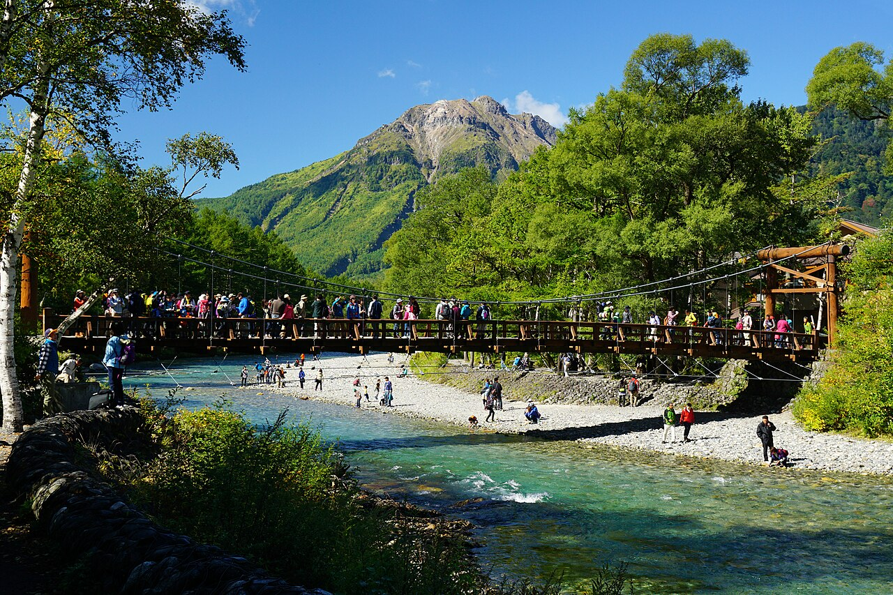
🌉 河童橋
👀 必看
- 上高地的象徵：站在橋上往上游看，穗高連峰就在正前方。
- 梓川帶著淡淡藍綠色的清澈河水。
- 早上 6 點左右人最少，晨霧最美。
⚠️ 注意
- 橋上不要停留太久。不要餵野生猴子。上高地沒有垃圾桶，垃圾全部帶走。
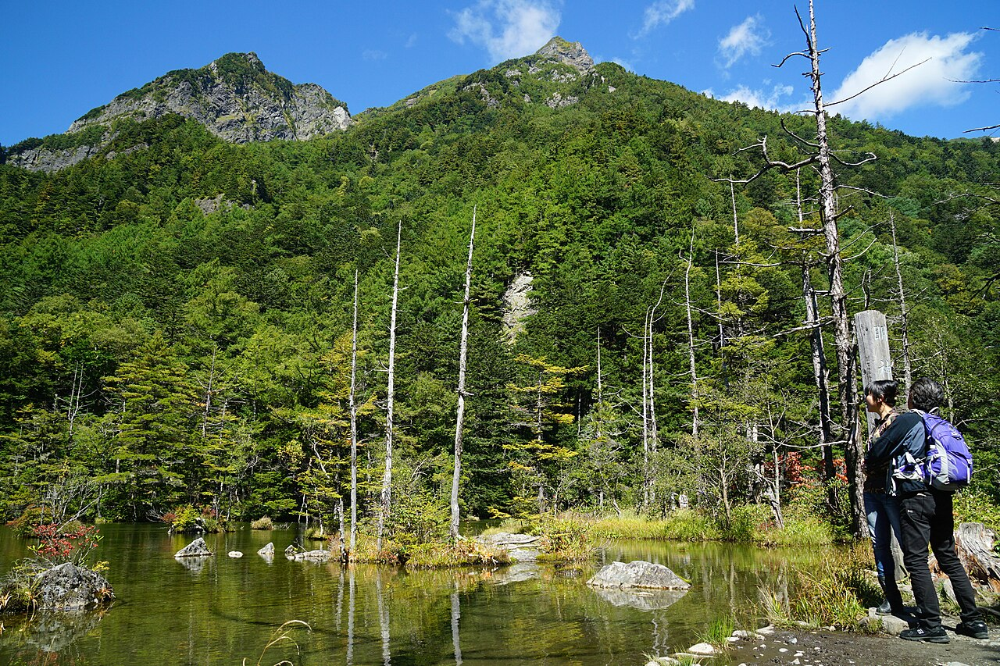
⛩️ 明神池
👀 必看
- 穗高神社奧宮，守護北阿爾卑斯山的神社。
- 一之池、二之池像鏡子一樣平靜。
- 附近嘉門次小屋的炭烤岩魚很有名。
⚠️ 注意
- 要付拜觀費（約 ¥500）。從河童橋走約 1 小時，先評估體力。
- 帶熊鈴，這段步道有熊出沒的紀錄。
諏訪

🌇 立石公園
👀 必看
- 俯瞰整個諏訪湖和周邊城鎮，和劇中糸守湖的角度最像。
- 黃昏之時：天空從橘、紫到深藍的變化。
- 天黑後的夜景，被選為「日本夜景遺產」。
⚠️ 注意
- 公園在很陡的山坡上，請搭計程車。夏天傍晚蚊子很多。
- 日落後很快變暗，請帶手電筒；請飯店先幫忙叫回程車。
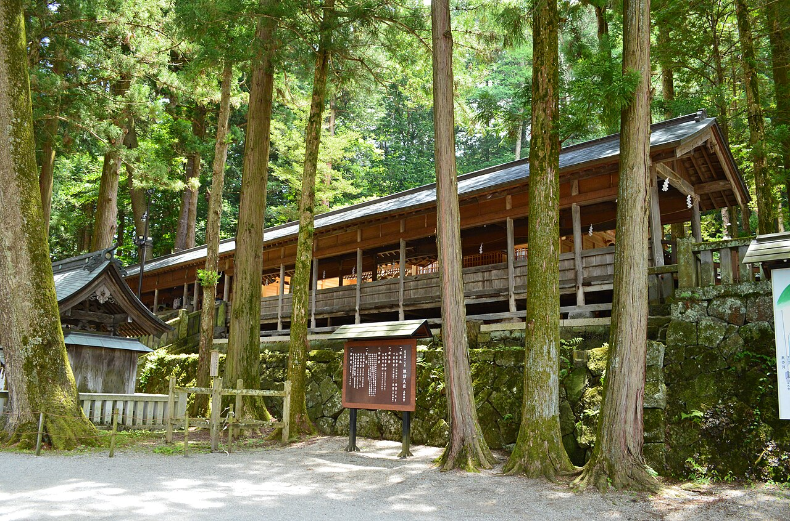
⛩️ 諏訪大社 上社本宮
👀 必看
- 御柱：四個角落的巨大杉木柱，每 6 年一次的「御柱祭」是日本三大奇祭之一。
- 沒有本殿，直接以背後的山為神體，保留最古老的信仰形式。
- 布橋：長長的木造迴廊。
⚠️ 注意
- 參拜時保持安靜和禮貌。這次只安排四宮中離上諏訪最近的上社本宮。
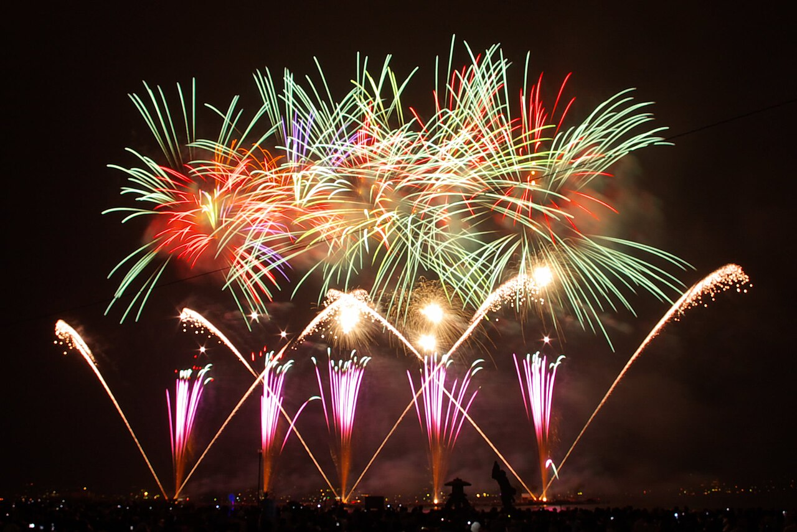
🎆 諏訪湖祭湖上花火大會
👀 必看
- 水上 Star Mine：在湖面排成半圓形同時發射，花火倒映在湖面。
- 群山包圍的湖面讓爆炸聲在山谷迴響，震撼感特別強。
- 最後壓軸：大量花火同時發射，湖面像白天一樣亮。
⚠️ 注意
- 先約好走散時的集合點，例如紅屋飯店大廳。
- 帶野餐墊、晚餐、飲料、防蚊液、扇子、垃圾袋、手電筒。
- 用手機夜景模式拍；座位區禁止腳架。散場時不要逆著人潮走。
最後購物
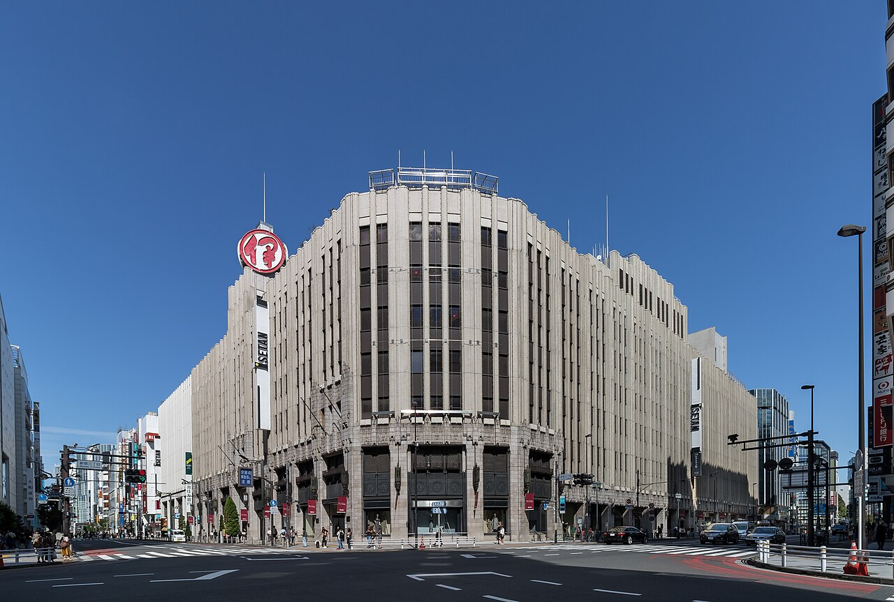
🛍️ 伊勢丹新宿店地下美食街
👀 必看
- 日本最有名的百貨地下美食街之一，和菓子、洋菓子、便當、熟食應有盡有。
- 東京限定甜點、精緻包裝的和菓子，很適合送人。
⚠️ 注意
- 熱門甜點下午可能就賣完。生鮮食品保存期限短。
- 不能帶回台灣：肉類製品（含肉泡麵、肉乾、飛驒牛加工品）、新鮮水果，違規會被重罰。
🙏 共通禮儀
| 場合 | 注意事項 |
|---|---|
| ⛩️ 神社 | 鳥居前鞠躬，不走參道正中間；參拜順序二拜、二拍手、一拜 |
| ♨️ 溫泉 | 先洗淨身體再入池，毛巾不放進池子，不能穿泳衣 |
| 🚃 電車 | 不講電話，背包背在前面，博愛座讓給需要的人 |
| 🗑️ 垃圾 | 街上垃圾桶很少，隨身帶垃圾袋 |
| 📸 拍照 | 聖地巡禮地點多是居民生活空間，不擋路、不拍到別人 |